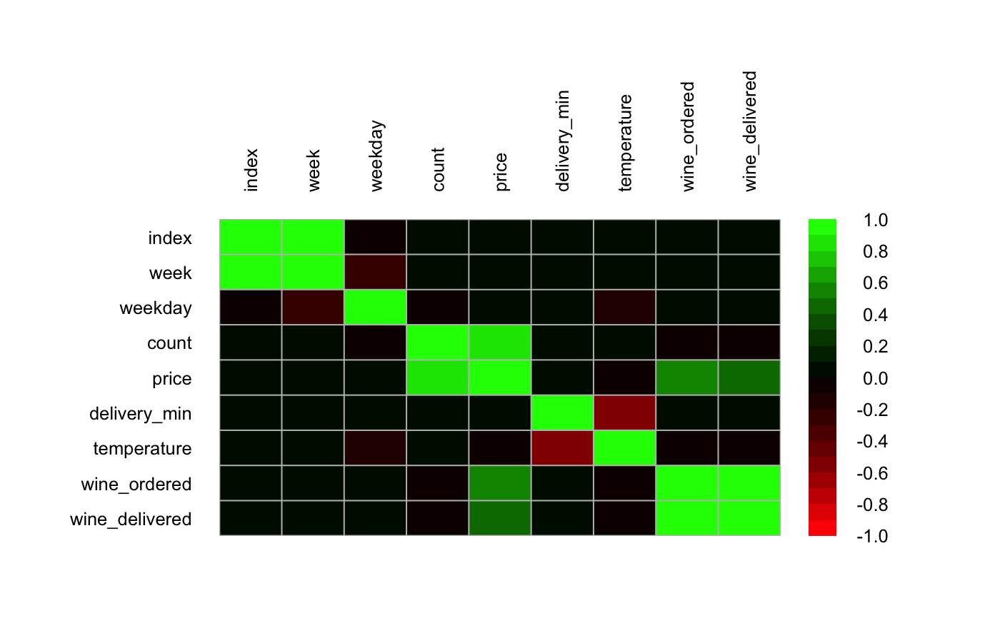
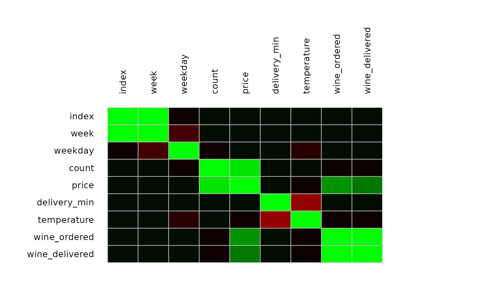
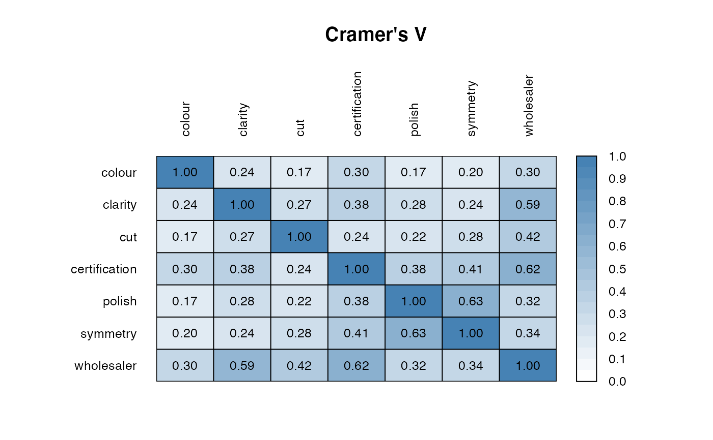
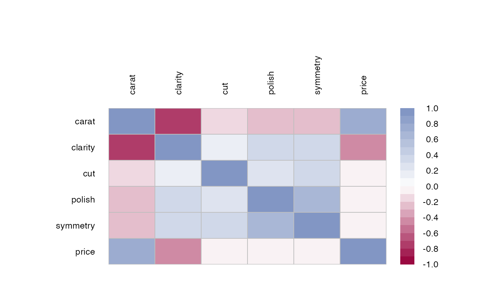
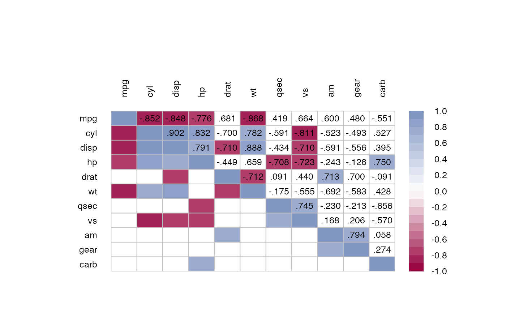
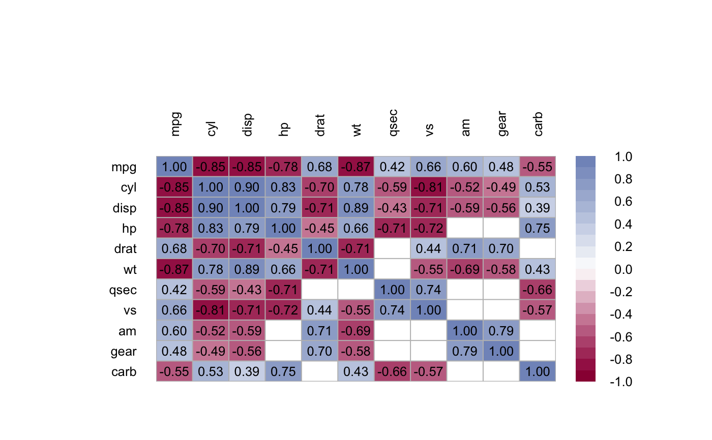
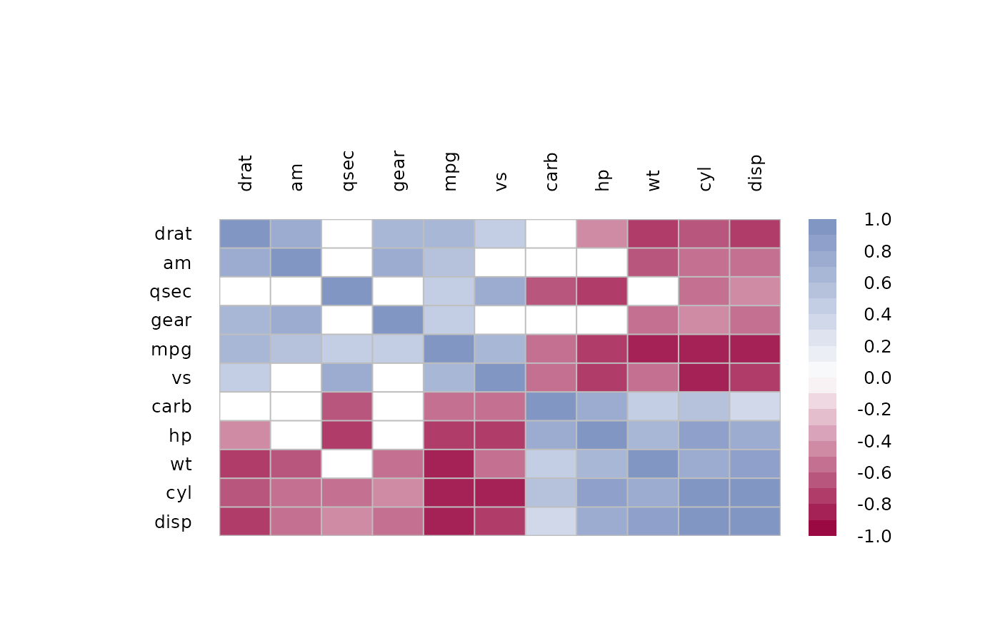

Plot a Correlation Matrix
PlotCorr.RdThis function produces a graphical display of a correlation matrix. The cells of the matrix can be shaded or colored to show the correlation value.
PlotCorr(x, cols = colorRampPalette(c(Pal()[2], "white", Pal()[1]), space = "rgb")(20), breaks = seq(-1, 1, length = length(cols) + 1), border = "grey", lwd = 1, args.colorlegend = NULL, xaxt = par("xaxt"), yaxt = par("yaxt"), cex.axis = 0.8, las = 2, mar = c(3, 8, 8, 8), mincor = 0, main = "", clust = FALSE, ...)
Arguments
| x | x is a correlation matrix to be visualized. |
|---|---|
| cols | the colors for shading the matrix. Uses the package's option |
| breaks | a set of breakpoints for the colours: must give one more breakpoint than colour. These are passed to |
| border | color for borders. The default is |
| lwd | line width for borders. Default is 1. |
| args.colorlegend | list of arguments for the |
| xaxt | parameter to define, whether to draw an x-axis, defaults to |
| yaxt | parameter to define, whether to draw an y-axis, defaults to |
| cex.axis | character extension for the axis labels. |
| las | the style of axis labels. |
| mar | sets the margins, defaults to mar = c(3, 8, 8, 8) as we need a bit more room on the right. |
| mincor | numeric value between 0 and 1, defining the smallest correlation that is to be displayed. If this is >0 then all correlations with a lower value are suppressed. |
| main | character, the main title. |
| clust | logical. If set to |
| ... | the dots are passed to the function |
Value
no values returned.
Author
Andri Signorell <andri@signorell.net>
See also
image, ColorLegend, corrgram(), PlotWeb()
Examples
m <- cor(d.pizza[,sapply(d.pizza, IsNumeric, na.rm=TRUE)], use="pairwise.complete.obs") PlotCorr(m, cols=colorRampPalette(c("red", "black", "green"), space = "rgb")(20))PlotCorr(m, cols=colorRampPalette(c("red", "black", "green"), space = "rgb")(20), args.colorlegend=NA)m <- PairApply(d.diamonds[, sapply(d.diamonds, is.factor)], CramerV, symmetric=TRUE) PlotCorr(m, cols = colorRampPalette(c("white", "steelblue"), space = "rgb")(20), breaks=seq(0, 1, length=21), border="black", args.colorlegend = list(labels=sprintf("%.1f", seq(0, 1, length = 11)), frame=TRUE) )text(x=rep(1:ncol(m),ncol(m)), y=rep(1:ncol(m),each=ncol(m)), label=sprintf("%0.2f", m[,ncol(m):1]), cex=0.8, xpd=TRUE)# Spearman correlation on ordinal factors csp <- cor(data.frame(lapply(d.diamonds[,c("carat", "clarity", "cut", "polish", "symmetry", "price")], as.numeric)), method="spearman") PlotCorr(csp)m <- cor(mtcars) PlotCorr(m, col=Pal("RedWhiteBlue1", 100), border="grey", args.colorlegend=list(labels=Format(seq(-1,1,.25), digits=2), frame="grey"))# display only correlation with a value > 0.7 PlotCorr(m, mincor = 0.7)x <- matrix(rep(1:ncol(m),each=ncol(m)), ncol=ncol(m)) y <- matrix(rep(ncol(m):1,ncol(m)), ncol=ncol(m)) txt <- Format(m, digits=3, ldigits=0) idx <- upper.tri(matrix(x, ncol=ncol(m)), diag=FALSE) # place the text on the upper triagonal matrix text(x=x[idx], y=y[idx], label=txt[idx], cex=0.8, xpd=TRUE)# or let's get rid of all non significant correlations p <- PairApply(mtcars, function(x, y) cor.test(x, y)$p.value, symmetric=TRUE) # or somewhat more complex with outer p0 <- outer(1:ncol(m), 1:ncol(m), function(a, b) mapply( function(x, y) cor.test(mtcars[, x], mtcars[, y])$p.value, a, b)) # ok, got all the p-values, now replace > 0.05 with NAs m[p > 0.05] <- NA PlotCorr(m)# the text n <- ncol(m) text(x=rep(seq(n), times=n), y=rep(rev(seq(n)), rep.int(n, n)), labels=Format(m, digits=2, na.form=""), cex=0.8, xpd=TRUE)# the text could also be set with outer, but this function returns an error, # based on the fact that text() does not return some kind of result # outer(X = 1:nrow(m), Y = ncol(m):1, # FUN = "text", labels = Format(m, digits=2, na.form = ""), # cex=0.8, xpd=TRUE) # put similiar correlations together PlotCorr(m, clust=TRUE)# same as idx <- order.dendrogram(as.dendrogram( hclust(dist(m), method = "mcquitty") )) PlotCorr(m[idx, idx])